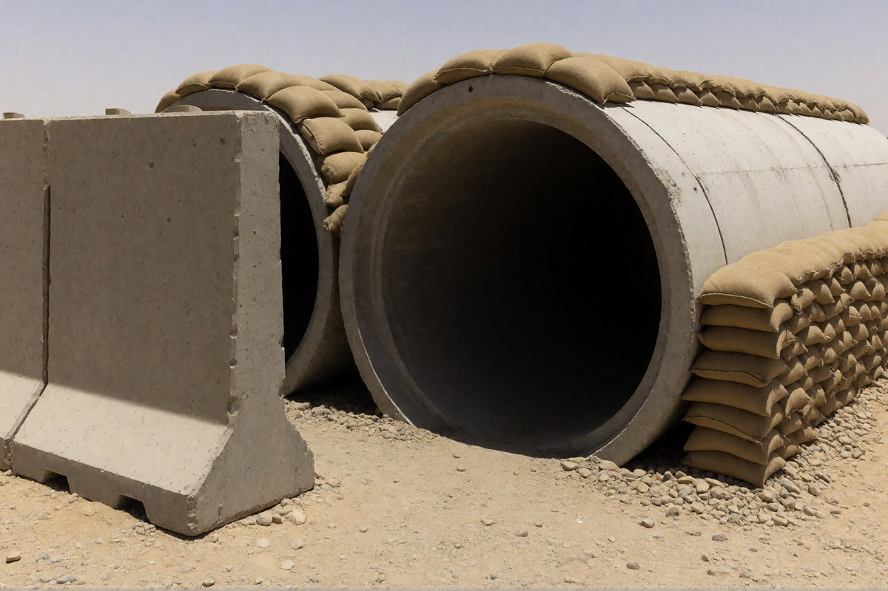

Geopolitica · 13 novembre 2026
17 bunker in fretta: l'America si copre dai missili iraniani

Un avviso dell'esercito americano cerca imprese per costruire in 45 giorni 17 bunker in cemento armato in Israele, Arabia Saudita e Libano. Servono a sostituire i rifugi di fortuna in cui oggi si riparano i soldati.
di Franco Zanghì
L'esercito americano cerca imprese per costruire in fretta 17 bunker in cemento armato in Medio Oriente. Il motivo sono i missili e i droni dell'Iran.
Dieci bunker in Israele, in un solo sito; cinque in Arabia Saudita, in due installazioni; due in Libano, in due siti diversi. Lo prevede un avviso pubblicato il 13 novembre dal comando che firma i contratti per l'esercito americano nella regione, l'Army Contracting Command per l'US Army Central. Lo riportano la rivista specializzata Meed, il Jerusalem Post, Stars and Stripes e Al Arabiya.
Non è ancora una gara
Un punto che vale la pena chiarire: quell'avviso non è il bando. Meed e Stars and Stripes precisano che si tratta di una ricerca di mercato, cioè del passaggio in cui l'amministrazione verifica quali imprese sarebbero in grado di fare il lavoro. Chi è interessato deve mandare entro il 25 novembre un documento di al massimo otto pagine in cui dice per quali dei tre Paesi si candida, quali uffici o impianti di prefabbricazione ha in loco e quali lavori simili ha fatto nella regione negli ultimi tre o cinque anni. La gara vera verrà dopo, e per presentare i prezzi ci saranno tre giorni.
Come sono fatti e quanto tempo c'è
Ogni bunker è composto da tre sezioni di cemento armato prefabbricato, con porte d'acciaio antiesplosione, sacchi di sabbia sul tetto e sui lati e barriere di cemento alte 3 metri, da circa sei tonnellate l'una, davanti agli ingressi. Sono previsti anche i supporti metallici per le schermature contro i tiratori scelti e la demolizione dei muretti e dei container che oggi fanno da riparo.
I tempi sono stretti: 45 giorni per ogni ordine di lavoro dall'aggiudicazione, con i primi 15 giorni per gli accessi alla base, le verifiche di sicurezza e i rilievi, e la costruzione schiacciata nei 30 giorni successivi. I nomi delle basi restano segreti: l'esercito li darà solo alle imprese verificate.
Le parole dell'avviso
L'avviso parla di un'esigenza urgente e di alta priorità: sostituire i rifugi non standard in cui oggi si ripara il personale, per esempio container per le merci riconvertiti. E altrove usa un'espressione ancora più chiara: estrema urgenza operativa, con i soldati attualmente a rischio in quei ripari di fortuna.
Perché ci riguarda
Perché in Libano ci sono anche i soldati italiani della missione delle Nazioni Unite. E perché ogni base blindata nel Golfo racconta una guerra che non è finita, a poche ore di volo da casa nostra.
Il contesto
Il primo marzo, in Kuwait, un drone iraniano ha colpito un centro operativo improvvisato alla base di Port Shuaiba: sono morti sei riservisti dell'esercito americano. Dopo quell'attacco i giornali americani hanno chiesto perché quei soldati non fossero in una struttura protetta. A metà novembre, riferisce Stars and Stripes, un ufficiale sopravvissuto ha presentato un esposto all'ispettore generale del Pentagono e al Congresso, sostenendo che gli avvertimenti sulla mancanza di protezione dalle minacce dal cielo erano stati ignorati.
E gli attacchi continuano. Secondo Fox News, martedì 17 novembre l'Iran ha rivendicato un attacco contro una base americana in Bahrein, il terzo in cinque giorni; sabato 21 novembre il Bahrein ha fatto sapere che un attacco iraniano ha provocato un incendio in un impianto industriale. Fox scrive che dall'inizio della guerra, a fine febbraio, sono morti almeno 23 militari americani.
Il capo del Pentagono, Pete Hegseth, già a marzo aveva detto che per le truppe servivano rifugi più solidi, e in una visita nella regione ha definito una priorità di teatro il mettere in campo rapidamente i bunker e poi migliorare quelle posizioni. Sull'avviso, invece, né il Pentagono né l'esercito hanno voluto commentare.
Il punto
Diciassette bunker non sono tanti, ma il messaggio è chiaro: Washington non si prepara a una tregua vicina, si prepara a restare, e a restare sotto il fuoco.
Il passaggio da guardare è il 25 novembre: scade il termine per le imprese che si candidano. Poi arriverà la gara vera, e i tempi diranno quanta fretta ha l'America di chiudersi nel cemento.
Fonti
- Meed, «US Army seeks contractors for Middle East bunkers», di Colin Foreman, 17 novembre 2026
- The Jerusalem Post, «US Army urgently seeking new reinforced bunkers for Middle East bases», di Anna Ahronheim, 19 novembre 2026
- Stars and Stripes, «Army seeks bunker builder to improve troop shelters in 3 Middle East countries», di Matthew M. Burke, 18 novembre 2026
- Fox News, «US races to build bunkers across Middle East as Iranian strikes threaten American troops», di Emma Bussey, 18 novembre 2026
- Al Arabiya, «US military rushing to build new bunkers across Middle East amid Iran war», 19 novembre 2026
- Al Jazeera, sull'attacco iraniano e l'incendio in un impianto industriale in Bahrein, 21 novembre 2026
L'avviso è del 13 novembre 2026 ed è una ricerca di mercato, non un bando di gara: numeri e tempi possono cambiare quando la gara verrà pubblicata. L'articolo di Al Arabiya è citato come fonte della notizia ma non è stato letto direttamente, perché il sito non consente la lettura automatica. Alla data di pubblicazione non risultavano smentite né aggiornamenti successivi al 19 novembre.